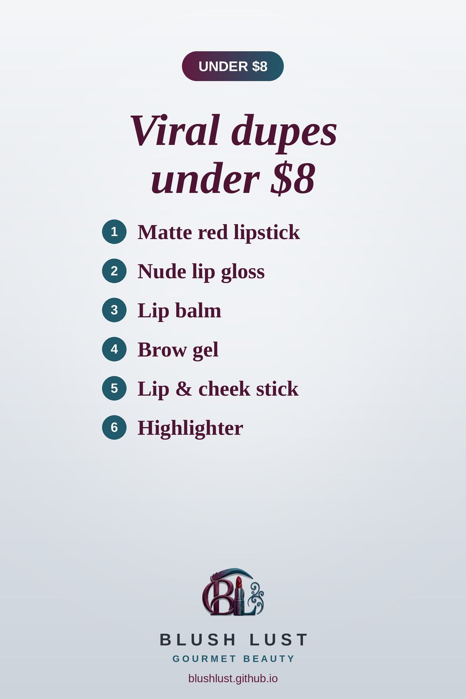

6 Viral Makeup Dupes Under $8 on Amazon.ca
The cheapest swaps on the site: cult-favourite looks for less than a fancy coffee. Every pick was under $8 on Amazon.ca when we last checked.
This post contains affiliate links. If you buy through them, we may earn a small commission at no extra cost to you. As an Amazon Associate I earn from qualifying purchases.
Wet n Wild MegaLast Matte Lipstick in Red Velvet
A bold, statement matte red. This long-wearing Wet n Wild matte is a budget pick for the same iconic look.
Shop the dupe on Amazon.ca →Wet n Wild MegaSlicks Lip Gloss in Snuggle Sesh
A sheer pinky-nude gloss for glossy, flattering lips.
Shop the dupe on Amazon.ca →e.l.f. Squeeze Me Lip Balm
A cushiony, glossy balm in a squeeze tube. Beauty shoppers love the e.l.f. one for the same buttery feel.
Shop the dupe on Amazon.ca →e.l.f. Wow Brow Gel
Tinted, fibre-filled brow gel that adds volume and holds brows in place in seconds.
Shop the dupe on Amazon.ca →e.l.f. Monochromatic Multi Stick
A creamy multi-use stick that melts into a soft, cream-to-powder flush on cheeks, lips and eyes.
Shop the dupe on Amazon.ca →Wet n Wild MegaGlo Highlighting Powder in Blossom Glow
A buttery, finely milled highlighter that gives a high-shine, reflective glow on the high points of the face for a fraction of the price.
Shop the dupe on Amazon.ca →
Prices change often — check Amazon.ca for the current price.